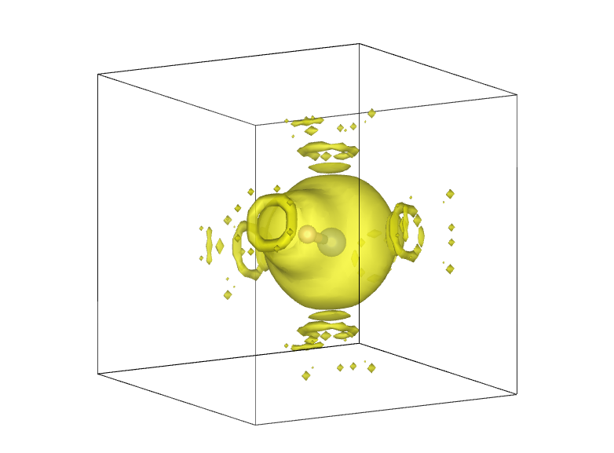
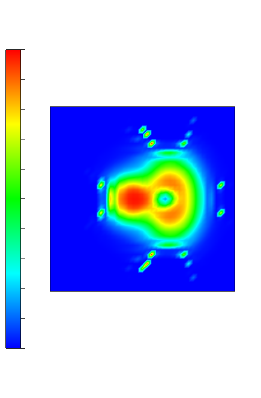
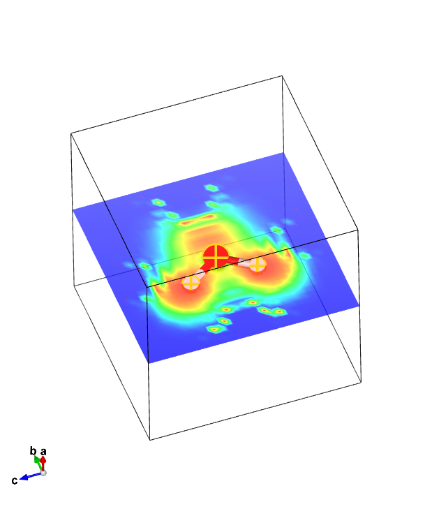
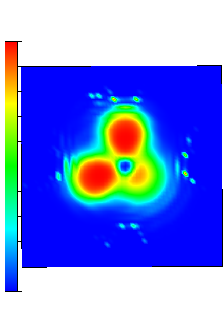

ELF
ELF (Electron Localization Function) is another way to measure electron density. In this tutorial, we will use it to roughly demonstrate lone pairs/hydrogen bonding in HF, H2O and NH3.
HF
For HF we will use the cell file:
HF.cell
%block lattice_abc
6 6 6
90 90 90
%endblock lattice_abc
%block positions_abs
H 3 3 3
F 3.92 3 3
%endblock positions_abs
kpoints_mp_grid 4 4 4
param file:
HF.param
xc_functional : LDA
cutoff_energy : 500 eV
spin_polarised : false
CALCULATE_ELF : TRUE
WRITE_FORMATTED_ELF : TRUE
Note
For this tutorial we will simply assume that everything here is converged and stick to the LDA functional
When you run castep on HF you will get an output file HF.elf_fmt. The top should look a little like
BEGIN header
Real Lattice(A) Lattice parameters(A) Cell Angles
6.0000000 0.0000000 0.0000000 a = 6.000000 alpha = 90.000000
0.0000000 6.0000000 0.0000000 b = 6.000000 beta = 90.000000
0.0000000 0.0000000 6.0000000 c = 6.000000 gamma = 90.000000
1 ! nspins
32 32 32 ! fine FFT grid along <a,b,c>
END header: data is "<a b c> chi"
1 1 1 0.000000
2 1 1 0.000000
3 1 1 0.000000
4 1 1 0.000000
5 1 1 0.000000
...
First, we rename (or copy + rename) it to HF.charg_frm, changing the file type. Then we delete the top lines (the header) so that the file starts with
Next we will visualise this data using Vesta. There is more detail on how that is done in an earlier tutorial, including a YouTube walkthrough. We simply download both the original cell file and newly created charg_frm file (if you wish to move the files around, make sure they're in the same directory), and open the charg_frm file on vesta.
What you should immediately see is something like this :

You'll be able to see it more properly by rotating it around yourself, but the yellow represents the electron cloud, and there are 2 atoms in the middle (naturally the small one is hydrogen and large one is fluorine) which are surrounded by said cloud.
We can already see evidence of lone pairs/hydrogen bonding : the 'circles' of yellow outside the big cloud even visually resemble lone pairs, while chunks going even further away could potentially hint at them trying to form hydrogen bonds with adjacent cells.
We can visualise this better by clicking Utilities -> 2D Data Display in Vesta. That'll open up a new window - in it, click Slice... and select the miller indices to be 001. Apply that and you should get an image like this :

This gives us an interesting picture: the small regions of high electron density look even more like what we'd expect of lone pairs. The nitrogen has 3 around it (as expected), yet the hydrogen also has 1 - this is not what we'd expect. However, considering that this will be interacting with adjacent cells, this is a good indication that it has formed a hydrogen bond.
Water and ammonia
The procedure for H2O and NH3 is almost identical. We use exactly the same param file as above, and perform the same procedures following the elf_fmt output. The cell files we use are:
H2O.cell
%block lattice_abc
5 5 5
90 90 90
%endblock lattice_abc
%block positions_abs
O 2.5 2.5 2.5
H 2.5 1.95 3.29
H 2.5 1.95 1.72
%endblock positions_abs
for water and
NH3.cell
%BLOCK LATTICE_ABC
8 8 8
90 90 90
%ENDBLOCK LATTICE_ABC
%BLOCK POSITIONS_ABS
N 4 4 4
H 4 4 5
H 4.95 4 3.67
H 3.53 3.18 3.67
%ENDBLOCK POSITIONS_ABS
For ammonia.
From then, we again go to 2D display data and Slice.... This is where the procedure might be a bit different: by shift clicking on all the atoms in H2O (and the atoms within the plane you wish to look at in NH3) and clicking Calculate the best plane for the selected atoms it'll give us the plane that we may be most interested in. In the case of water it is a simple (100), but for NH3 you may wish to play around with it by selecting different combinations - alternatively manually choose a plane in which you are interested
Note
In VESTA, plane selection may work a bit differently from how you'd expect. In this example, since you're cutting through the middle you'd normally call it a (200) plane. However, here it is considered a (100) plane 2.5\mathring{\text{A}} (or 0.5d - since the unit cell lengths are 5\mathring{\text{A}}) from the origin
The result for water in the (100) plane should look like:

An alternative way of getting a similar result is by clicking Edit -> Lattice Planes, after which you can click New to either manually add whatever lattice planes you wish to examine, or again Calculate the best plane for the selected atoms after selecting the atoms by shift-clicking 3 of them. This provides the advantage of seeing precisely which plane you're looking at, as well as having the option of seeing where the atoms are in the electrical distribution. By following this procedure for H2O we get this:

Note
Don't forget you can turn off Show isosurfaces and Show sections under Volumetric data - if you're going to be looking at the cell itself this may obscure what you're trying to look at
Lastly, let's take a quick look at the NH3 result. Selecting the best plane containing 2 hydrogens and a nitrogen should give a result looking like:

Like in the previous examples, you should be able to see evidence of lone pairs/hydrogen bonding - it is important to note, however, this may not be the case for all planes. Even when selecting 2 hydrogens and a nitrogen, even picking 2 different hydrogens may yield different results.